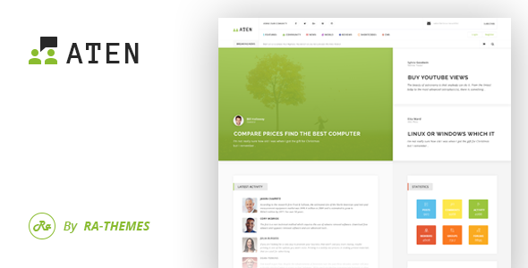
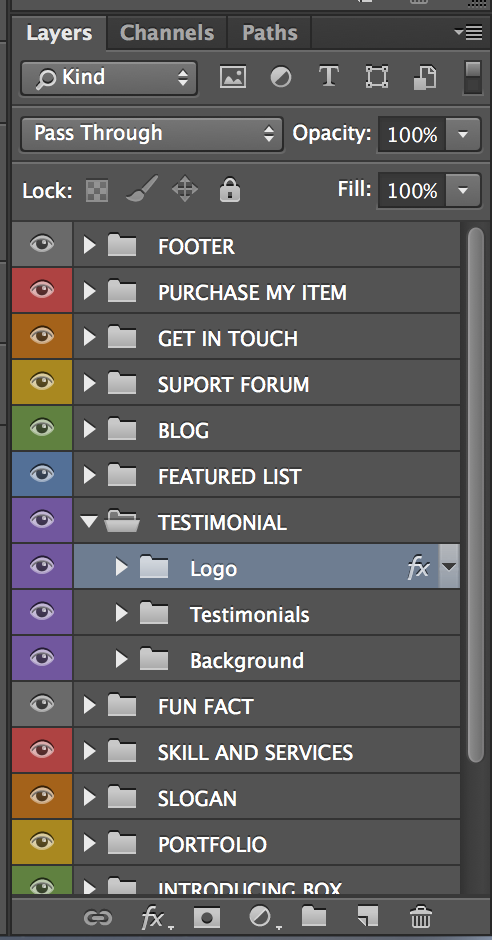

Thank you for purchasing my theme. If you have any questions that are beyond the scope of this help file, please feel free to email via my user page contact form here: RaThemes on ThemeForest. Thanks so much!

Aten – Construction PSD Template can be used for any type of construction websites . PSD template comes with tons of customization options and features .
12 PSD files included in Aten Version 1 The design is very elegant and modern. Also this will be very easy to customize.You need to Install below Fonts before use Aten PSD Files.
In order to edit the file, you need to have Adobe Photoshop installed on your system, and the fonts mentioned in the credits installed.
As you can see on the right, the layers are well organized and gropued into folders, which make editing very easy.
So, all you have to do, is select the layer from the right, and then edit it with Adobe Photoshop.
That's all! Enjoy.
Free Font Based Icons by Font-Awesome, Free Font Based Icons by The Elegant Icon Font, Premium Icon by Shutterstock.com, Premium Icon by Icomoon.io
Flickr creative commons library pictures by chrisschoenbohm, davefayram, fiddleoak, gruenewiese, markus spiske, moridin3335, needoptic. And Shutterstock.com, Pixeden.com,Creativemarket.com, Unsplash.com, Picjumbo.com, Behance.net
Please Note: All images are just used for Preview Purpose Only. They are not part of the theme and NOT included in the final purchase files.